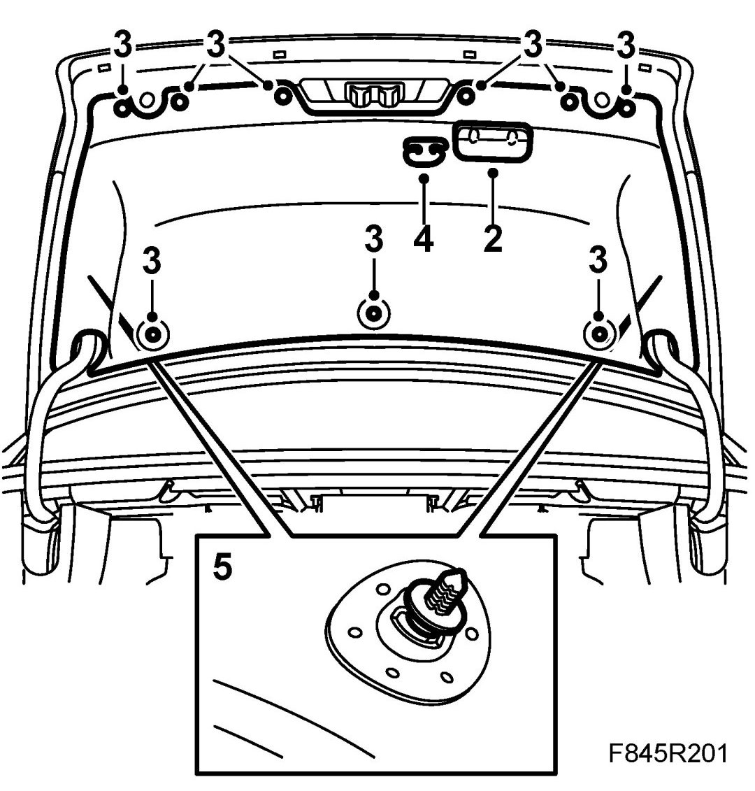
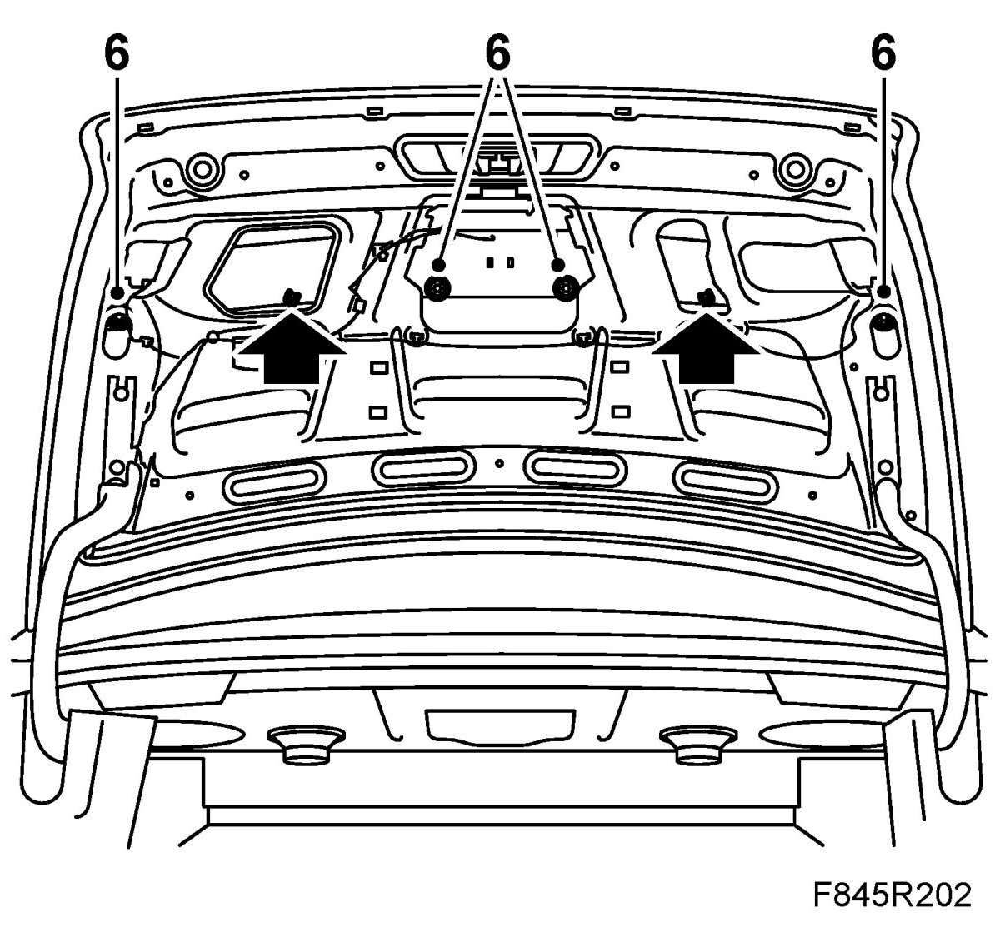
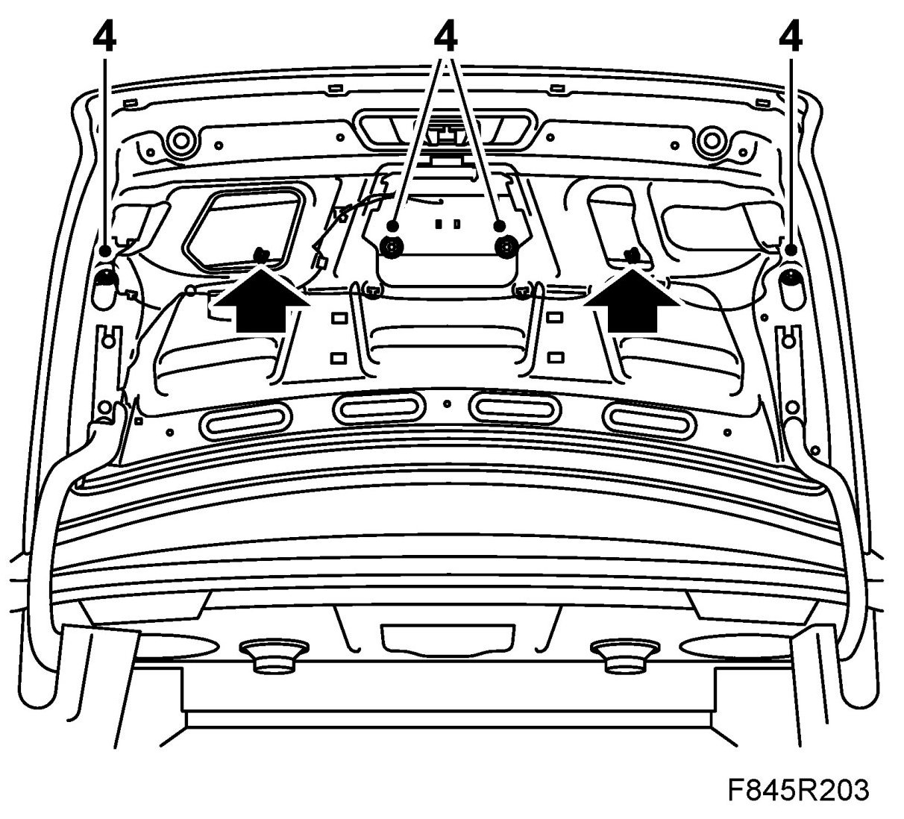
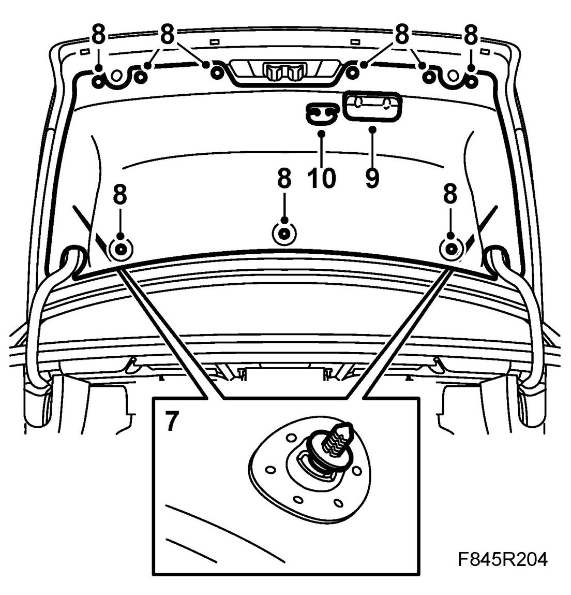

Rear Spoiler (Aero)
Rear Spoiler (Aero)
To remove
1. Open the boot lid.
2. Remove the grab handle.

3. Remove the clips securing the trim.
4. US/CA: Remove the emergency opening handle from the trim. Detach the cable from the handle.
5. Bend aside the trim slightly from the cover on the lock. Pull out the rear trim clips. Remove the trim from the boot lid.
6. Remove the spoiler bolts.

7. Remove the spoiler from the boot lid.
To fit
1. Clean the surface of the boot lid.
2. Remove the tape protector from the spoiler.
3. Guide the spoiler into position.
4. Fit the bolts securing the spoiler.

5. Lift up the trim.
US/CA: Pass the emergency opening handle through the trim.
6. Guide the trim into position relative to the lock cover.
7. Guide in the trim's locating clips and press the rear clips home.

8. Fit the clips.
9. Fit the grab handle.
10. US/CA: Attach the emergency opening handle to the cable. Fit the handle to the trim. Check the function of the emergency opening handle.
11. Close the boot lid.